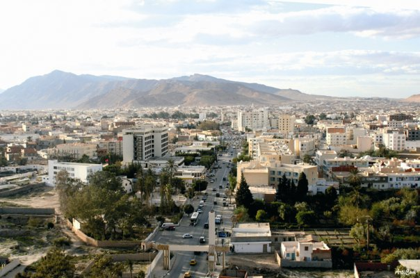
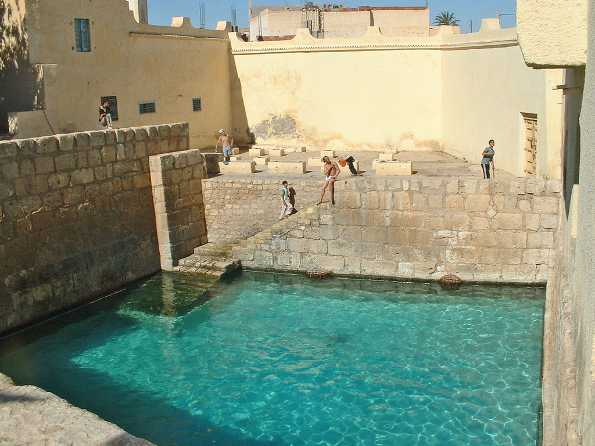

GAFSA
description de Gafsa
GAFSA ou CAPSA comme les Romains l'ont nommée, région antique, mythique et huit fois millénaire, fut le berceau de la civilisation humaine en Afrique. De tout temps et de toutes les ères, elle a été une pièce maîtresse de la Tunisie. La ville de Gafsa est l’oasis occidentale la plus septentrionale de la Tunisie du sud. Son histoire remonte à la préhistoire et c’est grâce à la civilisation capésienne qu’elle a pris son nom. La légende dit que sa fondation était attribuée à Hercule. Et depuis sa création Gafsa avait une brillante histoire. Pendant l’époque romaine et plus précisément sous le règne de l’empereur Auguste cette ville était sur la voie reliant Tacape (Gabes) et Haidra
Picne GAFSA
Bien plus qu'un réservoir millénaire représentant une composante de l'identité gafsienne, les piscines romaines ont acquis dés les époques les plus reculées une sacralité et des divinités liées à l'eau . Mais la relation du gafsien à ce complexe thermal n'est pas seulement spirituelle, elle est également charnelle